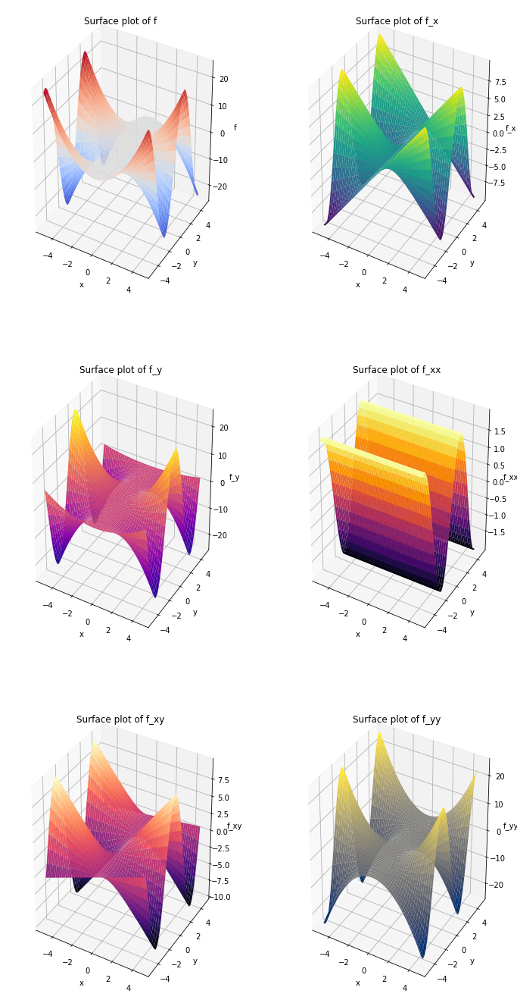

## This cell just imports necessary modules
import numpy as np
from sympy import sin, cos, Function, Symbol, diff, integrate, exp, pi
from mpl_toolkits.mplot3d import Axes3D
from matplotlib import cm
%matplotlib inline
import matplotlib.pyplot as plt
Multivariable calculus¶
First partial derivatives¶
Lecture 2, slide 10
# Define the independent variables using Symbol
r = Symbol('r')
h = Symbol('h')
# Define the function V(r,h)
V = pi*(r**2)*h
# The first partial derivative of V w.r.t h (i.e. r is kept constant)
print("The first partial derivative of V w.r.t. h is: ", diff(V, h))
# The first partial derivative of V w.r.t r (i.e. h is kept constant)
print("The first partial derivative of V w.r.t. r is: ", diff(V, r))
The first partial derivative of V w.r.t. h is: pi*r**2
The first partial derivative of V w.r.t. r is: 2*pi*h*r
r = np.arange(0, 10, 0.1)
h = np.arange(0, 10, 0.1)
R, H = np.meshgrid(r, h)
V = np.pi * R**2 * H
fig = plt.figure(figsize=(8,6))
ax1 = fig.add_subplot(111, projection='3d')
ax1.plot_surface(R, H, V, cmap=cm.coolwarm, edgecolor='none')
ax1.set_xlabel('r')
ax1.set_ylabel('h')
ax1.set_zlabel('V')
ax1.set_title('Surface plot of V')
plt.show()
Second partial derivatives¶
Lecture 2, slide 12
x = Symbol('x')
y = Symbol('y')
f = (x**2)*sin(y)
f_x = diff(f, x)
f_y = diff(f, y)
print("The first partial derivatives of f = (x**2)*sin(y) are: ")
print("f_x = ", f_x)
print("f_y = ", f_y)
f_xx = diff(f_x, x)
f_xy = diff(f_x, y)
f_yx = diff(f_y, x)
f_yy = diff(f_y, y)
print("The second partial derivatives of f = (x**2)*sin(y) are: ")
print("f_xx = ", f_xx)
print("f_xy = ", f_xy)
print("f_yy = ", f_yy)
print("f_yx = ", f_yx)
if f_xy == f_yx:
print("\nf_xy = f_yx")
else:
print("Error")
The first partial derivatives of f = (x**2)*sin(y) are:
f_x = 2*x*sin(y)
f_y = x**2*cos(y)
The second partial derivatives of f = (x**2)*sin(y) are:
f_xx = 2*sin(y)
f_xy = 2*x*cos(y)
f_yy = -x**2*sin(y)
f_yx = 2*x*cos(y)
f_xy = f_yx
x = np.arange(-5, 5, 0.25)
y = np.arange(-5, 5, 0.25)
X, Y = np.meshgrid(x, y)
f = X**2 * np.sin(Y)
f_x = 2 * X * np.sin(Y)
f_y = X**2 * np.cos(Y)
f_xx = 2 * np.sin(Y)
f_xy = 2 * X * np.cos(Y)
f_yy = -X**2 * np.sin(Y)
fig = plt.figure(figsize=(24,16))
ax1 = fig.add_subplot(231, projection='3d')
ax1.plot_surface(X, Y, f, cmap=cm.coolwarm, edgecolor='none')
ax1.set_xlabel('x')
ax1.set_ylabel('y')
ax1.set_zlabel('f')
ax1.set_title('Surface plot of f')
ax2 = fig.add_subplot(232, projection='3d')
ax2.plot_surface(X, Y, f_x, cmap='viridis', edgecolor='none')
ax2.set_xlabel('x')
ax2.set_ylabel('y')
ax2.set_zlabel('f_x')
ax2.set_title('Surface plot of f_x')
ax3 = fig.add_subplot(233, projection='3d')
ax3.plot_surface(X, Y, f_y, cmap='plasma', edgecolor='none')
ax3.set_xlabel('x')
ax3.set_ylabel('y')
ax3.set_zlabel('f')
ax3.set_title('Surface plot of f_y')
ax4 = fig.add_subplot(234, projection='3d')
ax4.plot_surface(X, Y, f_xx, cmap='inferno', edgecolor='none')
ax4.set_xlabel('x')
ax4.set_ylabel('y')
ax4.set_zlabel('f_xx')
ax4.set_title('Surface plot of f_xx')
ax5 = fig.add_subplot(235, projection='3d')
ax5.plot_surface(X, Y, f_xy, cmap='magma', edgecolor='none')
ax5.set_xlabel('x')
ax5.set_ylabel('y')
ax5.set_zlabel('f_xy')
ax5.set_title('Surface plot of f_xy')
ax6 = fig.add_subplot(236, projection='3d')
ax6.plot_surface(X, Y, f_yy, cmap='cividis', edgecolor='none')
ax6.set_xlabel('x')
ax6.set_ylabel('y')
ax6.set_zlabel('f_yy')
ax6.set_title('Surface plot of f_yy')
plt.show()

Chain rule¶
Lecture 2, slide 19
a = Symbol('a')
b = Symbol('b')
t = Symbol('t')
x = a*t
y = b*t
T = 3*y*sin(x)
# SymPy automatically applies the chain rule here:
print("Differentiating T = 3*y*sin(x) wrt t using the chain rule:")
print(diff(T, t))
Differentiating T = 3*y*sin(x) wrt t using the chain rule:
3*a*b*t*cos(a*t) + 3*b*sin(a*t)
Definite and indefinite integrals¶
Lecture 2, slide 21
x = Symbol('x')
y = Symbol('y')
# Remember: Indefinite integrals result in a constant 'c'. SymPy sets this to zero.
# f is the function we want to integrate.
f = cos(x)
# The second argument is the variable we want to integrate with respect to.
# (in this example, it is 'x').
print("Integrating cos(x) yields:", integrate(f, x))
# Using integrate(2*x, (x, a, b)) evaluates a DEFINITE integral between x=a and x=b
a = 0
b = 2
print("Integrating 2*x between x=0 and x=2 yields:", integrate(2*x, (x, a, b)))
Integrating cos(x) yields: sin(x)
Integrating 2*x between x=0 and x=2 yields: 4
Double integrals¶
Lecture 2, slide 26
# The function we want to integrate.
f = 2*(x**2)*y
# First integrate f wrt y between y=0 and y=2.
inner_integral = integrate(f, (y, 0, 2))
print("The inner integral is: ", inner_integral)
# Then integrate the inner_integral wrt x.
outer_integral = integrate(inner_integral, (x, 0, 2))
print("The outer integral is: ", outer_integral)
The inner integral is: 4*x**2
The outer integral is: 32/3
x = Symbol('x')
y = Symbol('y')
f = Function('f')
f = 2 * x**2 * y
print("Integral of f w.r.t x and y is: ", integrate(f, x, y))
Integral of f w.r.t x and y is: x**3*y**2/3
x = np.arange(-5, 5, 0.05)
y = np.arange(-5, 5, 0.05)
X, Y = np.meshgrid(x, y)
f = 2 * X**2 * Y
integral = 1/3 * X**3 * Y**2
fig = plt.figure(figsize=(16,6))
ax1 = fig.add_subplot(121, projection='3d')
ax1.plot_surface(X, Y, f, cmap='magma', edgecolor='none')
ax1.set_xlabel('x')
ax1.set_ylabel('y')
ax1.set_zlabel('z')
ax1.set_title('Surface plot of f')
ax2 = fig.add_subplot(122, projection='3d')
ax2.plot_surface(X, Y, integral, cmap=cm.coolwarm, edgecolor='none')
ax2.set_xlabel('x')
ax2.set_ylabel('y')
ax2.set_zlabel('z')
ax2.set_title('Surface plot of integral of f w.r.t. x and y')
plt.show()